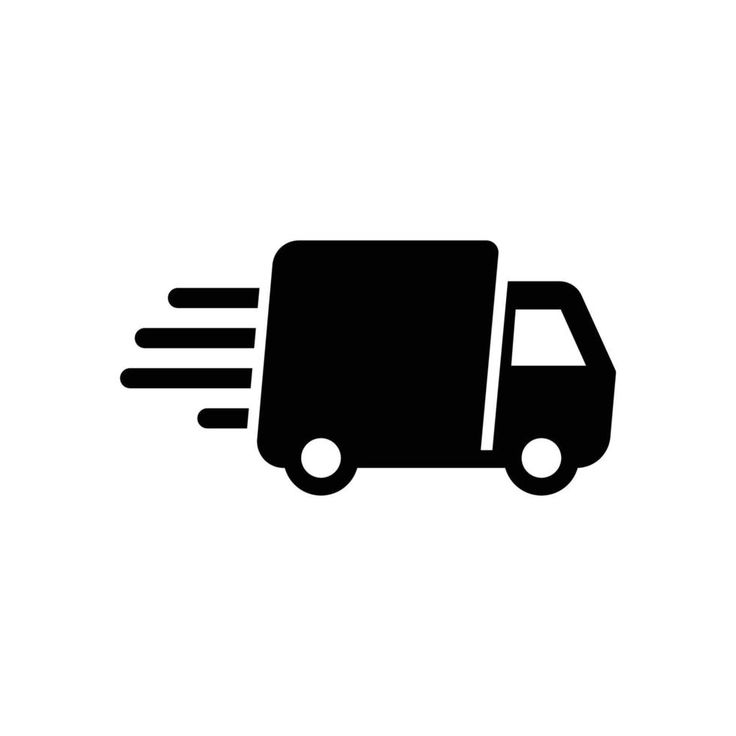
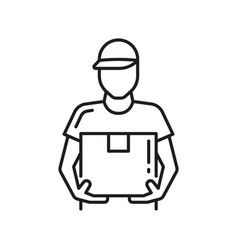

1. Donor Pledges Essentials
Donors select and pledge essential items they wish to contribute via our easy-to-use platform.
Our platform connects generous donors with people in need efficiently and transparently. Follow the simple steps below to see how essential supplies move seamlessly from donation to delivery.
Donors select and pledge essential items they wish to contribute via our easy-to-use platform.
Our team verifies donor information and matches donations with verified recipients in need.

Partner organizations coordinate pickups and transport donations directly to distribution centers.

Essential supplies reach recipients. Donors receive impact reports and stories of lives changed.